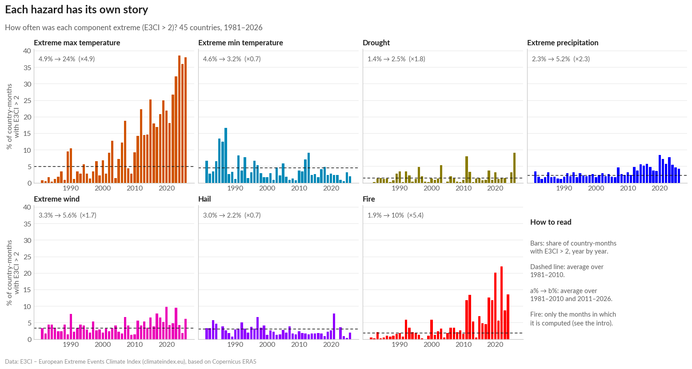
PROVA CON MENU A TENDINA Visualising extreme weather with the E3CI
0 · Setup ⏱ 3 min
Run these five cells once (click “Show code” if you are curious). Colab asks for two data files: in the second cell upload e3ci_climate_index_COUNTRIES.csv (the 51 countries, 2.4 MB), in the fifth one e3ci_climate_index_REGIONS.csv (the ≈750 regions used in Part 3, 35 MB). You can also drag both files onto the 📁 Files panel before you start, unless your organisers have already put a link in DATA_URL. The third cell checks the data and sets aside a few periods that look like processing gaps: real data always need checking before we draw them!
1 · Europe: is it getting more extreme? ⏱ 8 min
We count the country-months above 1: one country in extreme heat for one month = 1. With 45 countries and 12 months, a year has 540 country-months for each component.
1.1 Each hazard has its own story
One small chart per component (small multiples): every bar is the share of country-months above 1 in one year, the dashed line is the average of 1981–2010.
💬 Since 2011, months of extreme heat have been more than 3 times as frequent as in 1981–2010, and fire-weather extremes almost 3 times, while cold extremes and hail have become rarer. Precipitation, wind and drought change less, and less regularly: trends in these hazards are harder to detect than in temperature.
Now let’s look at the same hazards from another angle: when in the year do they strike?
1.2 When in the year?
A rose for each hazard and period, inspired by Florence Nightingale’s diagrams (1858). How to read it: * every petal is a calendar month: January at the top, then clockwise (April on the right, July at the bottom, October on the left); * the area of a petal, not its length, is proportional to the share of country-months that were extreme in that month, as in Nightingale’s roses; * inside each petal the classes go from the centre outwards: 1–2 (the lightest shade), 2–3, above 3 (the darkest); * top row: 1981–2010; bottom row: since 2011.
Remember: an E3CI “heat extreme” in January is an unusually warm January, not a 40 °C day.
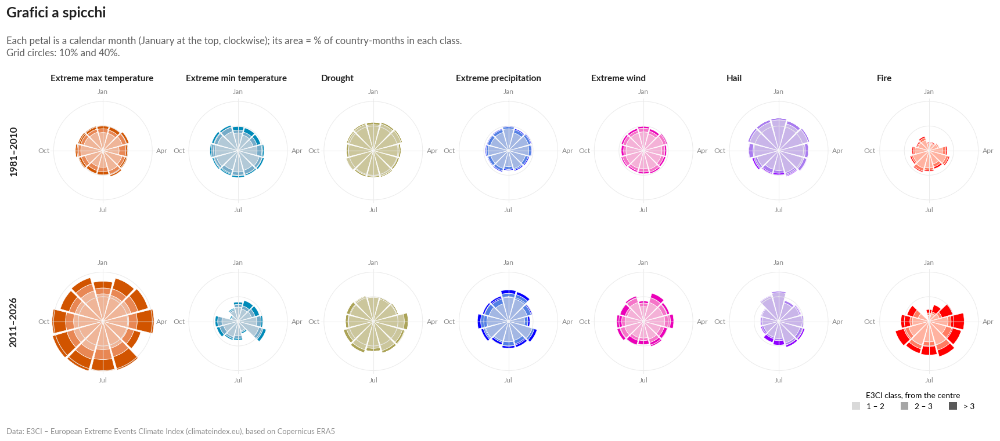
💬 In 1981–2010 most roses are almost round: the E3CI measures every month against the same month of that period. Since 2011 the extreme-heat rose has grown in every direction: in every calendar month, from a quarter to almost half of the country-months were extreme, against about one in ten before. Fire weather grows above all in spring and summer (in April, from 5% to 20% of the country-months), while the cold rose shrinks, especially in summer and in late autumn.
2 · Compare countries: who is hit the hardest? ⏱ 7 min
From here on, every chart looks at one component (or two) or at one place: in this guided tour we chose extreme heat, July and Italy, and the settings at the top of each cell can show any other.
2.1 One month, all countries
Extreme heat in July: every row is a country, every cell a year. On the right, how many extreme Julys each country had since 1981: the countries with the most are at the top.
Why July? It is the heart of summer, when heat extremes hit people the hardest. But the E3CI compares every July only with the Julys of 1981–2010, so any other month can be read in the same way: in the second part of the workshop you can choose it (MONTH = 0 shows the strongest month of each year).
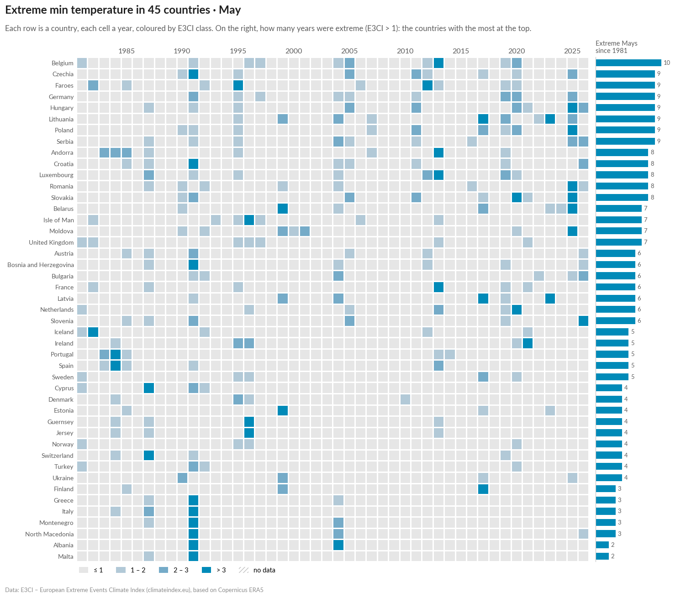
2.2 Heat vs cold, country by country
Two components side by side: extreme heat (orange) and extreme cold (blue). Each dot is a month above 2 in one country, the bigger dots are above 3; the rows are the 20 countries with the most extreme months. The title is written by the code, comparing the first and the last ten years.
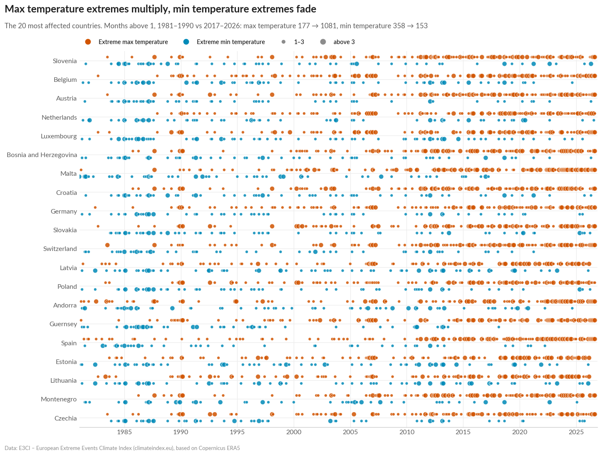
2.3 One map per year
First we load the country shapes (Natural Earth, ~3 MB), then we draw one small map per year: small multiples let the eye compare 46 Julys at once.
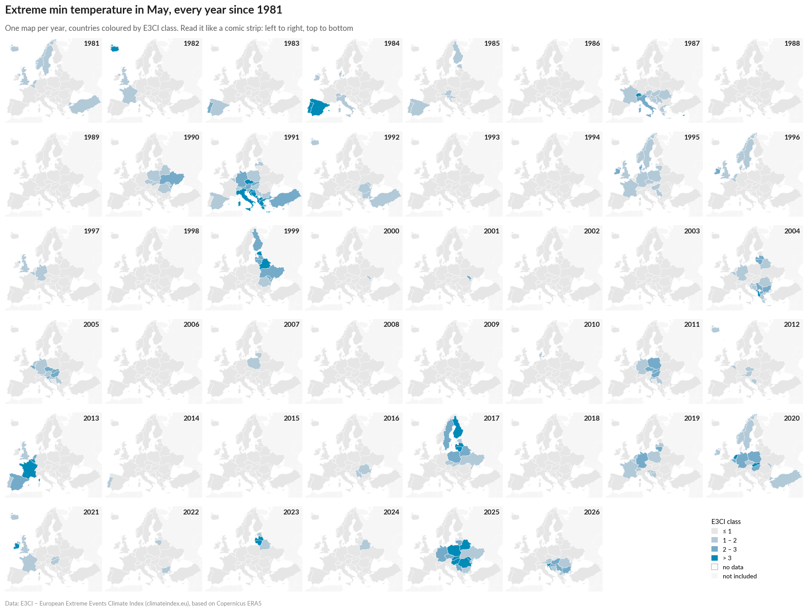
💬 What do you see? Compare the first rows with the last ones: in the 1980s an extreme July was a rare, local event; since 2012 almost every July has hit large parts of Europe, some years in the north (2014, 2018, 2025), others in the south and in the Balkans (2012, 2023, 2024).
3 · One country, zoom in: Italy ⏱ 12 min
After Europe as a whole, let’s zoom in on one country: the charts below show Italy and extreme heat from several angles, down to its regions. In the second part of the workshop you can choose your own country and component.
Countries you can choose (write the name exactly as here, between quotes, e.g. COUNTRY = "Spain"):
Albania, Andorra, Austria, Belarus, Belgium, Bosnia and Herzegovina, Bulgaria, Croatia, Cyprus, Czechia, Denmark, Estonia, Faroes, Finland, France, Germany, Greece, Guernsey, Hungary, Iceland, Ireland, Isle of Man, Italy, Jersey, Latvia, Lithuania, Luxembourg, Malta, Moldova, Montenegro, Netherlands, North Macedonia, Norway, Poland, Portugal, Romania, Serbia, Slovakia, Slovenia, Spain, Sweden, Switzerland, Turkey, Ukraine, United Kingdom.
3.1 The barcode of extremes
Inspired by Ed Hawkins’ warming stripes: one row per component, one cell per year.
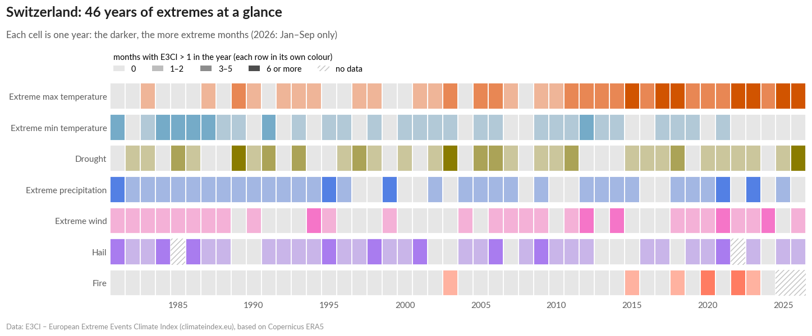
3.2 Month by month, as in the Data Station
Now one component only: extreme heat. Every bar is one month, coloured by E3CI class; the dots mark the three most intense months on record, with their value.
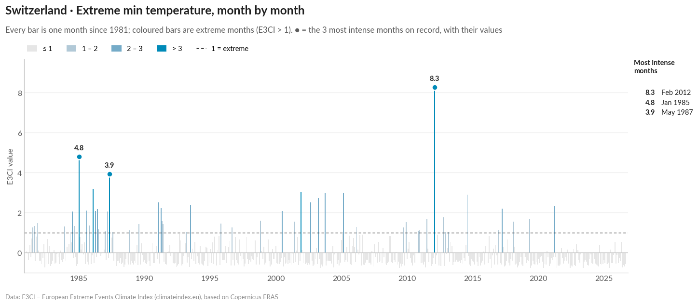
💬 The darkest bars, above 3, are almost all recent: 4 months in the 30 years 1981–2010, 31 since 2011. And the three most intense months on record are October 2023, April 2024 and July 2026 (remember: an extreme October is an unusually warm October, not a 40 °C day).
3.3 Records: are they falling faster than chance would predict?
The same months, seen through their records. A record is a month with a higher E3CI than every month before it in the same country, since January 1981. In a climate that does not change, records become rarer and rarer: after 10 years the chance that a month beats all the previous ones is about 1 in 120; after 40 years, about 1 in 480. That’s why we start counting in 1991: in the first years almost every month is a record, because there is hardly any history to beat.
📐 How many records should we expect? In a stable climate each of the first n months has the same chance of being the highest, so month n sets a record with probability 1/n. Adding up 1/n over the months since 1991 gives the number of records we would expect if nothing were changing. It is a reference, not an exact forecast: anomalies persist from one month to the next, so records can come in clusters.
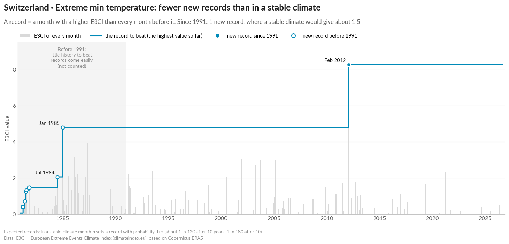
💬 Since 1991 Italy has set 6 records of extreme heat, where a stable climate would give about 1.5, and 3 of them in the last ten years alone (April 2018, October 2022, October 2023), when about 0.2 would be expected. Every step of the staircase raises the bar, and yet the bar keeps being beaten.
3.4 Which months, which years?
The same data as a heatmap: rows are months, columns are years. Top: extreme months per year. Right: how often each calendar month was extreme, then (grey) and now (colour).
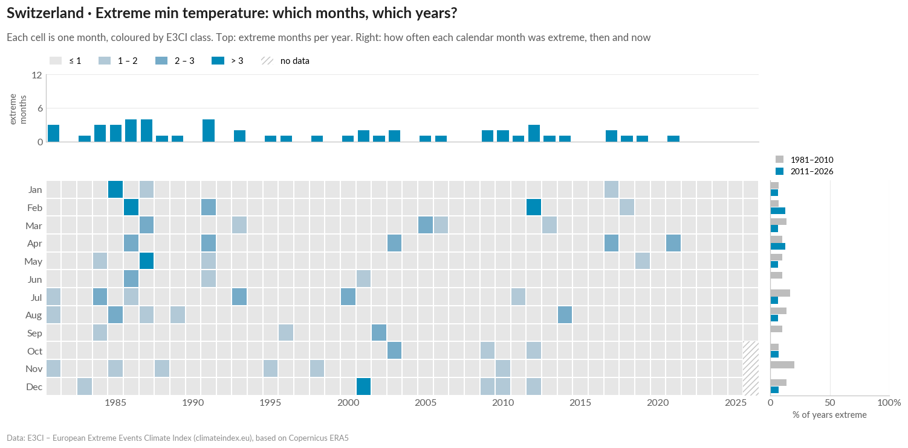
3.5 A real event: the Emilia-Romagna floods, May 2023
Many events hit only one region: here we use the regional data loaded in the setup. In May 2023 two waves of torrential rain flooded Romagna: was it the most intense month on record in Emilia-Romagna? How does it compare with the rest of Europe? The first cell lists other famous events: in the second part of the workshop you can choose one of them.
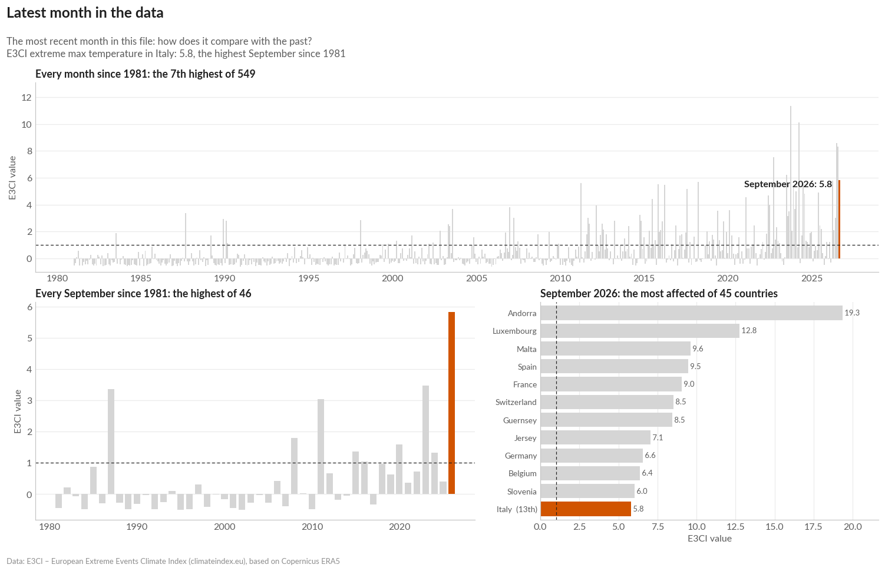
3.6 Rain in October, region by region
One month, every year, in the 20 Italian regions: rain in October. Why October? In October 2024 Bologna, the city of this conference, was flooded: find Emilia-Romagna in 2024. The settings at the top of the cell can show any other component, month or group of regions.
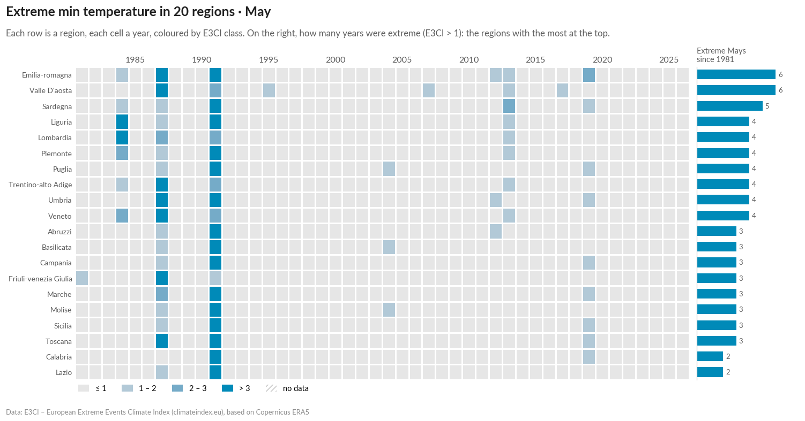
✅ End of the guided tour
In the second part of the workshop you will work on a copy of this notebook, connected to the Climate Gazette: choose the charts that tell your story, change the country, the component or the month in the settings at the top of each cell, give each chart a title that states the finding (write it in TITLE, at the top of the cell), and add your text.
💬 For the final discussion
- Which chart would you show to a mayor? To a newspaper reader? To a scientist? Why different ones?
- Which design choice changed your perception the most: the type of chart, the threshold, the period, the title?
- What does the E3CI not tell us? (people and assets exposed, damages, very local or very short events…)
- Did your titles state a finding, or ask a question? Which works better on social media?
Notebooks prepared by IFAB for the Visualising Climate 2026 workshop. Data: E3CI – European Extreme Events Climate Index, https://www.climateindex.eu (IFAB; implemented by CMCC and Leithà – Unipol Group; distributed by Hypermeteo and Radarmeteo), based on Copernicus ERA5. Neither the European Commission nor ECMWF is responsible for any use of the Copernicus information. Colours: the E3CI Data Station palette (design by Cinzia Bongino). Country shapes: Natural Earth (public domain). Font: Lato (SIL Open Font License).